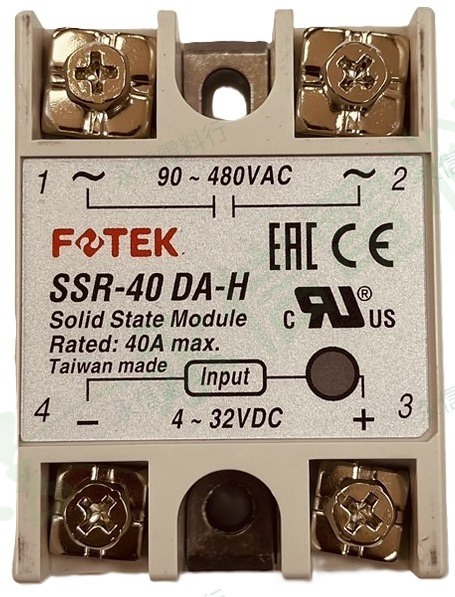

YONG XIN TECH NOTES
技術專欄｜每日一則
從現場常見故障現象出發，整理檢查方向、選型重點與相關商品，讓維修與備品核對更有效率。

每日一則 #006 · 溫控測溫
溫控器 PV 顯示 LL、HH 或感溫異常？先查感溫棒、配線與輸入設定
從感測器斷路、Input Type、Pt100 三線、熱電偶極性、補償導線到高溫配線，逐步檢查測溫訊號鏈。
閱讀全文 →

每日一則 #005 · 固態控制
SSR 標示 40A 為什麼還會燒掉？選型不能只看安培數
以 SSR-40DA-H 為例，說明額定電流、輸入／輸出型式、散熱、負載特性與 OFF 漏電流的核對重點。
閱讀全文 →

每日一則 #004 · 馬達控制
一按啟動就跳電？先區分接觸器控制迴路與主迴路故障
按下啟動才跳脫時，先看哪個保護元件動作，再檢查按鈕、線圈、自保持配線、控制電源與負載側。
閱讀全文 →
每日一則 #003 · 馬達控制
馬達接觸器主接點劣化？先檢查積碳、氧化與缺相風險
接點燒蝕、線圈電壓異常或端子接觸不良，都可能造成三相電流不平衡與馬達過熱。
閱讀全文 →
PT100
≠ K
≠ K
每日一則 #002 · 溫控測溫
射出機加熱區溫度失控？先確認 PT100 與 K 型熱電偶是否混用
PT100 與 K 型熱電偶的訊號、接線及控制器輸入設定不同，替換前必須逐項核對。
閱讀全文 →

每日一則 #001 · 配電保護
高濕環境頻繁漏電跳閘？先確認保護裝置與跳脫原因
先分清楚 MCB／MCCB 與 ELCB／RCD，再檢查潮氣、絕緣、累積漏電及變頻器負載。
閱讀全文 →
找不到符合關鍵字的文章。